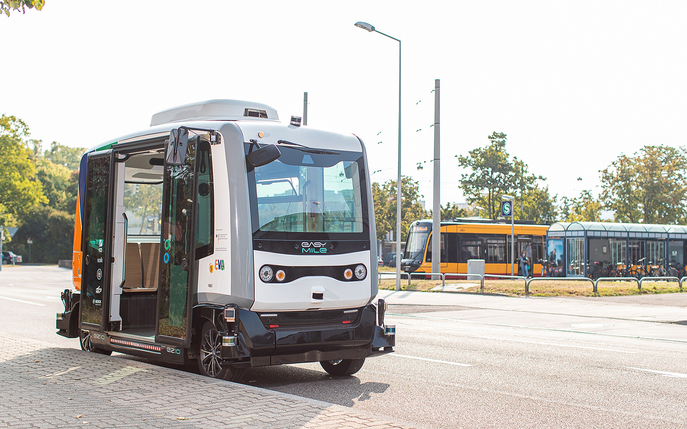

Карлсруе : інновації

Навіть у складні часи бізнес і наука є міцними наріжними каменями привабливого інвестиційного місця. Як центр інновацій, Карлсруе має хороші позиції та чудові позиції для майбутнього з його відомими університетами та дослідницькими установами, динамічними компаніями та мережами.
Понад 1 мільйон людей працюють у технологічному регіоні Карлсруе. Інноваційні компанії, промислова та реміснича база, здорове поєднання галузей і чудовий університетський ландшафт впливають на позитивний економічний клімат. Тут представлені такі відомі імена, як dm, EnBW, Siemens, Bosch і IONOS. Такі корпорації, як Michelin, L’ORÉAL і Stora Enso, цінують привабливе розташування на стику між Німеччиною та Францією.
Розширення широкосмугової мережі в Карлсруе добре просувається. Очевидна перевага для Карлсруе як місця для бізнесу та науки: ця інфраструктура робить можливими технології, орієнтовані на майбутнє, такі як штучний інтелект, автономне водіння або потужний мобільний зв’язок через 5G. Потужний Інтернет є двигуном цифровізації економіки та суспільства Карлсруе.